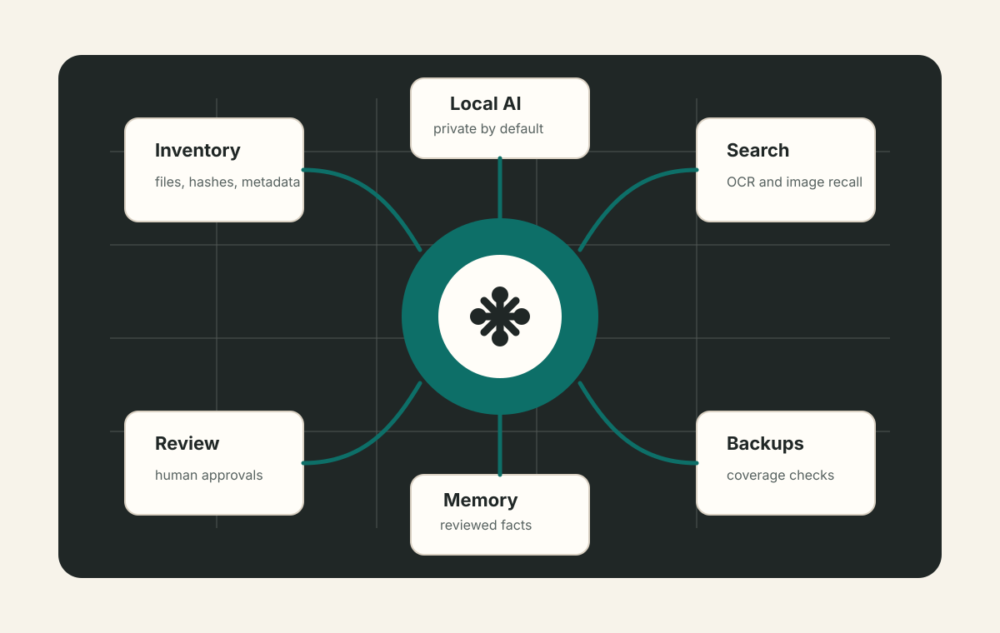
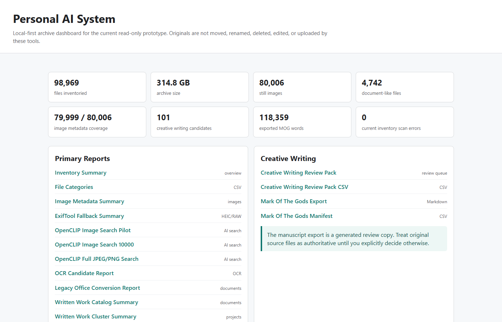
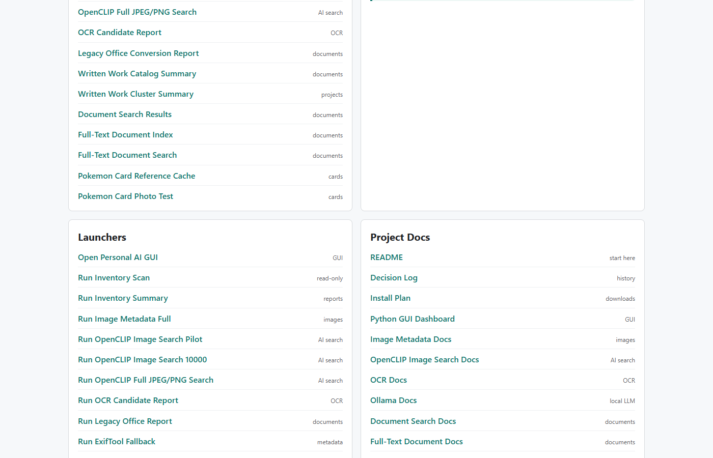
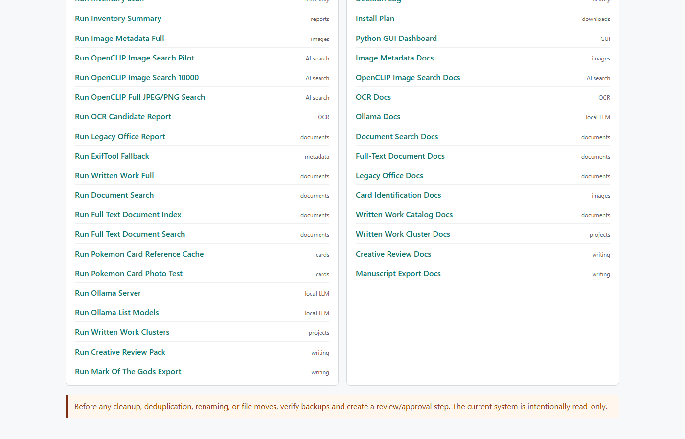

Featured build
Personal AI System
A local-first system for organizing documents and still images, adding searchable intelligence, and keeping AI suggestions traceable and reviewable.

Problem
Personal archives become hard to search, back up, deduplicate, and review as they grow across documents, images, media lists, and generated reports. Cloud-first tools can be convenient but do not always fit privacy-sensitive archives.
Build
A local Python system with inventory scanning, written-work cataloging, image metadata extraction, OCR, duplicate review, image search, face review, backup verification, media cataloging, review queues, and local Q&A foundations.
Design rule
Original files remain read-only unless a separate reviewed action says otherwise. Generated catalogs stay local. Every automated suggestion should trace back to a source file.
Tools
System map
Private by default, useful by design.
This case study intentionally avoids real personal media screenshots. The value is in the architecture and review discipline.
Inventory
Records path, size, modified time, extension, and optional hashes into a local catalog.
Search
Builds searchable indexes for written work, metadata, OCR output, and image similarity workflows.
Review
Uses approval queues for AI tags, face naming, duplicate review, and portfolio-style outputs.
Backups
Compares backup scans and exports must-keep project materials into portable packs.
Media catalog
Tracks game, movie, show, and backlog records with quick status views and edits.
Local memory
Stores reviewed facts, corrections, and approvals for later reuse in reports and local Q&A.
Actual dashboard snapshots
Views from the working local system.
These screenshots come from the project dashboard and show the read-only report launcher, documentation hub, and operating guardrails.


